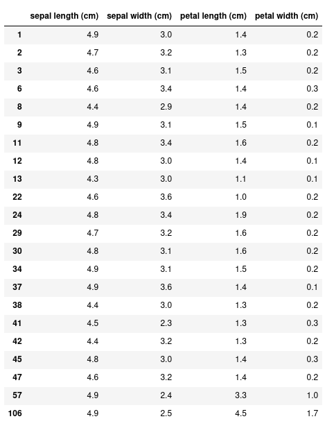
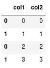
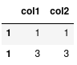
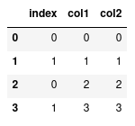
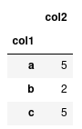

Introduction to Pandas
Lecture 6
Pandas
What is Pandas?

- Pandas a library to make the representation and manipulation of tabular data easier in Python.
- A table of data is called a ‘Dataframe’ that consists of named columns and (optionally) named rows.
- https://pandas.pydata.org/
Installing and importing pandas
To install pandas, we can either use conda:
conda install pandasor with pip:
pip install pandasAfter pandas has been installed. We shall import it into our scripts (using the common convention of aliasing the library as pd):
import pandas as pdCreating a dataframe
Now that pandas has been successfully imported, we’re ready to create and manipulate our own dataframes. To create a dataframe, we first need to organise our data in appropriate format. Perhaps one of the most simple formats for this data is a dictionary, where each value is a list:
data = {"col1": [1, 2], "col2": [3, 4]}We see that each ‘key’ is the representation of a column of data, and the value of this key is a list of data for this column. To convert this data to a dataframe, we need only to call the DataFrame class:
df = pd.DataFrame(data)df (dataframe for short) is now our representation of the dataframe:

We see that each column is named using the keys in our data dictionary, and the values of the column correspond to the elements in the list. To the left of the dataframe we have a numerical index starting at 0.
Extracting particular values from this dataframe can be accomplished using the loc and iloc class methods. First let’s look at using loc, and later on we’ll investigate the differences between these two methods.
Let’s say we want to get all the data for the first row of our dataframe:
df.loc[0]
This returns a ‘Series’, which is just a representation of a vector of data.
Access elements in our dataframe
To access a single value from this series, we can specify the column name:
df.loc[0]["col1"] # returns oneOr, we can more simply add the column name into the loc:
df.loc[0, "col1"]If we wanted to retrieve a subset of columns, we supply a list of column names:
df.loc[0, ["col1", "col2"]]We can also use the slice notation to access multiple rows:
df.loc[0:2, "col1"]This retrieves the values in col1.
Or if we just wanted to get the entire column of data, we could instead do:
df["col1"]Manipulating data
Reading a CSV file
Instead of manually constructing our data and then passing it to a DataFrame, we can use pandas to read directly from a CSV file and return a DataFrame:
Let’s say we have a CSV file of measurements of Iris flowers called iris.csv. We can read this CSV file using the pd.read_csv method.
df = pd.read_csv("iris.csv")
Selecting a subset of data
With this more complex dataset, we can use more fancy methods of indexing. For example, let’s select all the rows where the sepal length is less than 5 cm.
df[df["sepal length (cm)"] < 5]
Instead of the 150 rows we had before, this returns just 22. We can also specify only the columns we want with this conditional expression:
df[df["sepal length (cm)"] < 5]["sepal width (cm)"]Creating new columns
We can add new columns to this dataset by using the assignment operator. In this example, we’re creating a new column called ‘sepal sum’ to be the sum of both the ‘sepal width’ and ‘sepal length’:
df["sepal sum"] = df["sepal width (cm)"] + df["sepal length (cm)"]
Inspecting our data
Shape of the data
We can also further see that our new column has been added by inspecting the shape of the data.
df.shape(150, 5)This returns a tuple corresponding to the number of rows (150) and the number of columns (5).
Getting the names of columns
To find out what the names of the columns are we can use the columns attribute:
df.columnsIndex(['sepal length (cm)', 'sepal width (cm)', 'petal length (cm)',
'petal width (cm)', 'sepal sum'],
dtype='object')This returns an Index that can itself be indexed in the usual way:
df.columns[0]'sepal length (cm)'Head/tail
We can get the first/last few rows of the data using the .head() or .tail() methods. These take an optional argument specifying the number of rows to view. By default, it will show 10 rows.
df.head() # shows the first 10 rows
df.head(5) # shows the first 5 rows
df.tail() # shows the last 10 rows
df.tail(5) # shows the last 5 rowsOperations
Operations on data
Pandas comes with a few standard methods to perform some basic operations. For example, you can calculate the mean of a column:
df["sepal length (cm)"].mean()And you can use the apply() method to apply a function to every element (i.e. map a function to every element):
df["sepal length (cm)"].apply(lambda x: x * 2)Apply takes a function as an argument, and here we’re using an anonymous (unnamed function) using a lambda expression https://docs.python.org/3/tutorial/controlflow.html#lambda-expressions
This lambda expression will double its input, and therefore applying this function to every element will double all values in ‘sepal length (cm)’.
Apply operation to entire row
In the previous example, we saw the use of .apply, where a function is applied to each individual element in a column. With apply, it’s also possible to apply a function to each row of a dataframe, by specifying axis=1 in the call to apply:
# some df with value column defined here
def window_sum(row, window=5):
"""Take a sum of rows within a window"""
curr_index = row.name # access the row index number using .name
row["moving_avg"] = df.loc[curr_index-window:curr_index, "value"].sum()
return row # return the updated row
updated_df = df.apply(moving_avg, axis=1)Merge
Many pandas dataframes can be combined together using the concat method that requires a list of dataframes as input.
data1 = pd.DataFrame({"col1": [0, 1], "col2": [0, 1]})
data2 = pd.DataFrame({"col1": [2, 3], "col2": [2, 3]})
combined = pd.concat([data1, data2])
More on indexing
Notice how the indexes are repeated. We can also verify this using the .index attribute:
combined.indexInt64Index([0, 1, 0, 1], dtype='int64')We can see two ’0’s and two ’1’s. Normally, this is not a problem, but it does have an effect on when we index our data with loc.
combined.loc[1]
Notice how loc has returned two rows because it sees two rows with the index label of 1. If instead we simply meant: give me the second row we should use iloc:
combined.iloc[1]Which will give us the desired outcome.
Resetting indexes
Alternatively we can reset the index labels:
combined.reset_index()
This will compute a new series of indexes for our data, and then using loc again will only return the one row.
To save the result of reset_index() we need to overwrite our original data:
combined = combined.reset_index()Or specify inplace:
combined.reset_index(inplace=True)Different types of data
Categorical data
So far, we’ve only seen numerical data. One of the advantages of using pandas for tabular data is that we can represent various other types of data that makes our manipulation and operations on different data types simpler. For example, we can represent ‘categorical data’ where there is a finite set of values or categories.
df = pd.DataFrame({"col1": ["a", "b", "c", "a"],
"col2": [1, 2, 5, 4]})Right now, df is simply representing ‘col1’ as strings, but we can change the representation to categorical elements with:
df["col1"] = df["col1"].astype("category")With categorical data, we can perform operations on these groups a lot quicker than if we were just to represent them on strings. For instance, lets compute the sum of ‘col2’ for each group.
df.groupby("col1").sum()
If we have lots of data, having ‘col1’ astype('category') will be a lot more computationally efficient than leaving them as strings.
Dates and times
If you have a column that represents a date or time, you can convert that column to a true datetime representation with pd.to_datetime
df = pd.DataFrame({"col1": ["2002/01/30", "2010/05/16"]})
df["col1"] = pd.to_datetime(df["col1"])In addition to make indexing by dates a lot faster, it also provides us with some convienant methods to extract particular components from the data. Such as the year:
df["col1"].dt.year # or df["col1"].dt.month etc